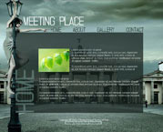
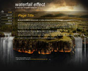

Our company Is all about computer design and strive to be the best at what we do. We dont just fix computers we also create innovation.
What does Flash Template mean?
Flash Template is a ready-made Flash Site that you can download and use for free! Flash Template was created by professional and independent designers for you. You need only to make your adjustments and your flash site is ready. If you open .fla file you can easily change the text information and graphics of the site. There's no need to make animation - our designers already did it. After your text and graphics adjustments you need only to upload .swf file to your server and enjoy your ready Flash Site! Using Free Flash Templates you can save your time and money!
What does Flash Template mean?
Flash Template is a ready-made Flash Site that you can download and use for free! Flash Template was created by professional and independent designers for you. You need only to make your adjustments and your flash site is ready. If you open .fla file you can easily change the text information and graphics of the site. There's no need to make animation - our designers already did it. After your text and graphics adjustments you need only to upload .swf file to your server and enjoy your ready Flash Site! Using Free Flash Templates you can save your time and money!
Your Flash Site will be look professional!
An extensive number of unique Flash Templates is at your service. All templates on our site were created specially for you! Our independent designers created flash professional templates. Also our templates are unique. It means you can use our flash templates to create your own site!
An extensive number of unique Flash Templates is at your service.